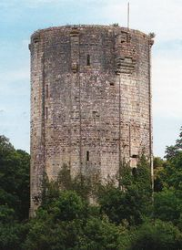
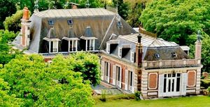
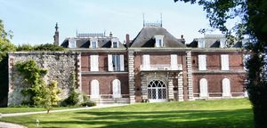
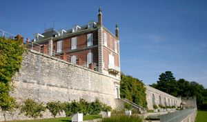
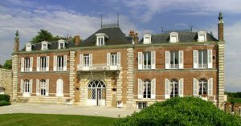
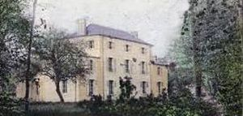
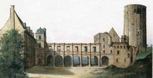

Chatillon_Coligny
| Département | 45 — Loiret |
| Canton | Châtillon-Coligny |
| Commune | Châtillon-Coligny |
| Type d'édifice | Château |
| Période d'origine | XVIII-XIX |








Histoire
Deux chateaux dans cet article, Chatillon, et à la Chapelle sur Aveyron, Ballu. CHATILLON-COLIGNY, en 1359, Louis de Melun aménage une ligne de fortification plus étendue, prolongée en 1376 autour de la ville. En 1437, la terre passe au domaine des Coligny, et en 1464, Jean III de Coligny commande la terrasse au-dessus de l'orangerie, le corps de bâtiment dit le Fer à Cheval date du XVe siècle. De 1547 à 1562, l'amiral Gaspard II de Coligny fait édifier un corps de galerie au nord du corps précédent et un autre corps à l'ouest relié au corps de galerie par un pavillon, le corps de galerie aurait été orné par le Primatice et Jean Goujon, le pavillon contenait l'escalier. Gaspard II fait réaliser l'orangerie et le puits sculpté attribué à Goujon. Pendant les guerres de Religion, on consolide l'enceinte à l'aide de six bastions. En 1569, Martinangue, gouverneur de Gien, chasse les réformés et pille le château de Coligny. En 1572, on ordonne sa démolition, qui commence par le pavillon sud, mais qui s'interrompt en 1638. Gaspard IV de Coligny abjure la religion protestante en 1645. En 1648, le comté de Châtillon est érigé en duché prairie on aurait alors bâti un pavillon contenant quatre appartements, des jardins dessinés par André Le Nôtre, les quatre pavillons d'angle du jardin et l'escalier accédant au jardin. En 1798, Antoine François Gourgeon et Hugues Montbrun, adjudicataires du château, obtiennent l'autorisation de le démolir. En 1816, Charles Emmanuel de Montmorency Luxembourg achète le château et fait bâtir en 1854, le logis actuel dans un ancien commun. Il subsiste aujourd'hui la tour maîtresse, le puits, l'orangerie et le logis aménagé en 1854.
Architecture
CHATILLON-COLIGNY, est un castrum aux mains des comtes de Blois En 1143, il est détruit par Louis VII, et la famille de Châtillon s'éteint. Au milieu du XIIe, la terre passe à la famille de Champagne, le donjon est bâti vers 1180 par Etienne I de Sancerre. La tour de plan circulaire puis polygonal à seize côtés, ce donjon offre à chacune des arêtes de ses faces, un pilastre surmonté d'un chapiteau qui décèle le ciseau de la fin du XIIe siècle. En 1854, a été construit un château de briques pour Charles Emmanuel Sigismond de Montmorency Luxembourg qui avait racheté les ruines après avoir fui au Portugal pour échapper à l'échafaud. On y retrouve une ancienne tour-porte qui en forme l'élément central. La cour d'honneur, en terrasse, n'est en fait que la partie supérieure de l'orangerie datant de la seconde moitié du XVIe siècle, sans doute l'une des premières de la Renaissance française, elle constitue le morceau de choix du château de l'amiral de Coligny. BALLUS Construit vers 1820. Le fief appartenait au baron de Vilmaure, la ferme est aujourdhui indépendante ; les communs datent de la seconde moitié du XIXe siècle. (Inscrit à linventaire du patrimoine culturel).
Habitants / Familles
Chatillon coligny; amiral Gaspard II de Coligny Ballus; baron de Vilmaure
"
Divers
Deux chateaux à Châtillon-Coligny, Chatillon grav-1 à 6 , et à La Chapelle sur Aveyron, Ballus grav-7.